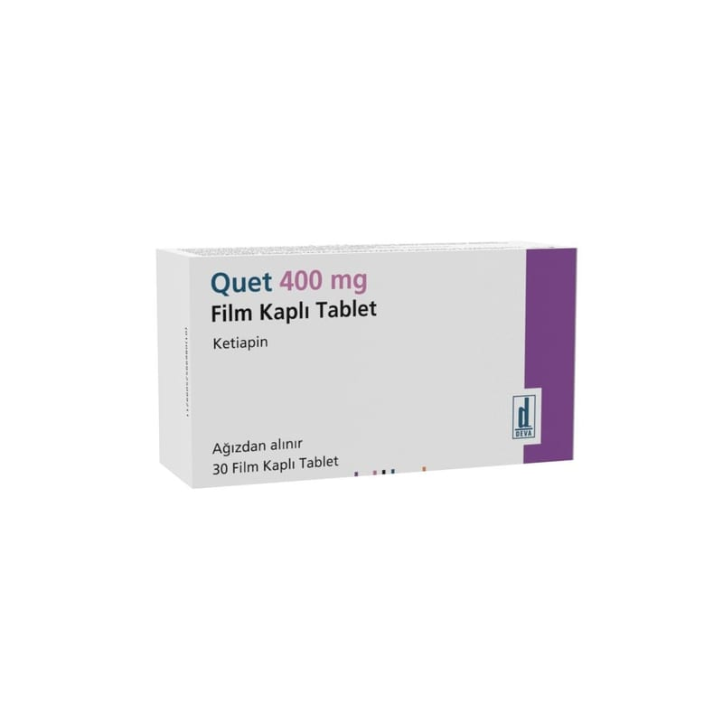

Quet 400 mg Film Kaplı Tablet, 60 Adet

Ne için kullanılır
KT · Bölüm 1QUET, beyaz renkli, oblong, bikonveks bir yüzü çentikli film kaplı tablettir. QUET 400 mg, kutuda, opak PVC/Al folyo blister ambalajda 30 veya 60 tablet olarak sunulmaktadır.
QUET etkin maddesi ketiapin olan, antipsikotikler (psikiyatrik hastalıkların tedavisinde kullanılan ilaçlar) olarak adlandırılan ilaç grubuna ait bir ilaçtır.
QUET aşağıdaki hastalıkların tedavisinde etkilidir: Bu ilacı kullanmaya başlamadan önce bu KULLANMA TALİMATINI dikkatlice okuyunuz, çünkü sizin için önemli bilgiler içermektedir.
• Bu kullanma talimatını saklayınız. Daha sonra tekrar okumaya ihtiyaç duyabilirsiniz. • Eğer ilave sorularınız olursa, lütfen doktorunuza veya eczacınıza danışınız. • Bu ilaç kişisel olarak sizin için reçete edilmiştir, başkalarına vermeyiniz. • Bu ilacın kullanımı sırasında doktora veya hastaneye gittiğinizde doktorunuza bu ilacı kullandığınızı söyleyiniz. • Bu talimatta yazılanlara aynen uyunuz. İlaç hakkında size önerilen dozun dışında yüksek veya düşük doz kullanmayınız.
• Bipolar bozukluğa eşlik eden majör depresif ataklar: Bu durumda kendinizi üzgün hissedersiniz. Karamsarlık, suçluluk, enerji kaybı, iştah azalması ve uykusuzluk hissedebilirsiniz. • Bipolar bozuklukta orta-ileri derece mani atakları: Aşırı coşkulu, heyecanlı, mutlu, meraklı veya hiperaktif olursunuz (uykuya her zamankinden daha az ihtiyaç duyar, daha konuşkan olur, düşüncelerin veya fikirlerin hızla akıp geçtiğini fark edebilirsiniz) ya da saldırgan veya yıkıcı tavırlar dahil karar verme yeteneğinizde zafiyet oluşur. • Daha önce ketiapin tedavisine cevap vermiş olan bipolar bozukluğu olan hastalarda mani ve depresif atakların nüks etmesinin önlenmesinde. • Şizofreni: Gerçekte var olmayan şeyleri duyabilir veya hissedebilirsiniz; gerçek olmayan şeylere inanırsınız ya da garip şüphe, endişe, kafa karışıklığı, suçluluk, gerginlik, can sıkıntısı hissedersiniz.
Kendinizi iyi hissetseniz bile doktorunuz QUET reçetenizi yazmaya devam edebilir.